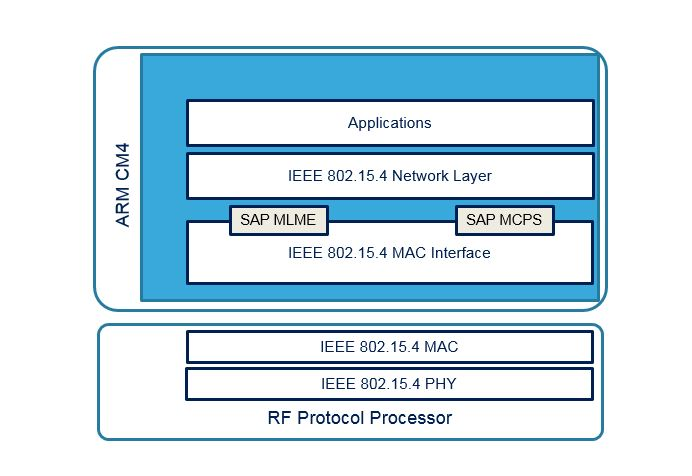

Release Notes for MAC 802.15.4 - 2011
Copyright © 2019 STMicroelectronics
License
This software component is licensed by ST under BSD 3-Clause license, the “License”; You may not use this component except in compliance with the License. You may obtain a copy of the License at:
https://opensource.org/licenses/BSD-3-Clause
Purpose
IEEE 802.15 Working group intends to define a standard that enable a low cost and low power communications. The IEEE 802.15.4 standard defines physical layers (PHY) and a Medium Access Control (MAC) which intend to address many simple network application space as Internet of Things solutions.
Two different kind of devices participate to IEEE 802.15.4 network:
Full Function Devices which may ensure the role of Personal Area Network (PAN) coordinator and
Reduced Function Device (RFD) which serve as Node for extremely simple application.
The provided 802.15.4 MAC API is integrated as shown on the figure below:
The MAC 802.15.4 from STM32_WPAN middleware makes the link between the network layers and the RF protocol processor.
Update History
Main Changes
First release
MAC API is based on latest official IEEE Std 802.15.4-2011 document available from :